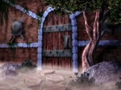
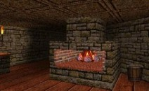
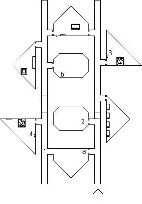

| 1 | Secret Door, open it from the West side. |
| 2 | Locked Room with Sharry Carnegie (quest item :) inside. Click a small key on the door to open it; the key is in one of the many chests. |
| 3 | Letter from the Price of Thieves. |
| 4 | Key to the locked room. |
Hit switch a and the b to get over to 4 to get the key to get into room 2.
Leave us a message at mgrounds@hotmail.com